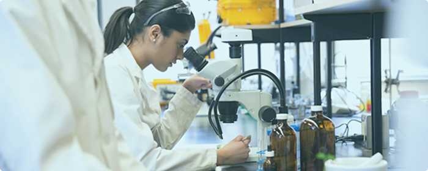

Медицина: технологии и долголетие
 Тренды
ТрендыГлавный вектор
Медицина продолжает стремительно развиваться, но её структура меняется так же заметно, как и в IT. Если раньше ключевым фактором была исключительно клиническая практика, то теперь на первый план выходит технологическая интеграция. Рост продолжительности жизни, старение населения, развитие цифровых сервисов и биотехнологий формируют новый рынок медицинских профессий. Сегодня системе здравоохранения нужны не только врачи, но и специалисты, которые умеют работать с данными и сложным оборудованием.
Технологии становятся частью лечения
Искусственный интеллект, цифровые платформы и автоматизированная диагностика уже встроены в медицинские процессы. Современный медицинский специалист работает в связке с технологиями b использует цифровые инструменты для повышения скорости принятия решений.
Растёт спрос на:
- медицинских аналитиков
- специалистов по цифровому здравоохранению
- инженеров медицинского оборудованияинженеров медицинского оборудования
- экспертов по AI-диагностике
Понимание принципов работы технологий становится новой профессиональной нормой.
Персонализированная медицина
Традиционная модель «одно лечение для всех» постепенно уходит в прошлое. Развитие генетики и биотехнологий позволяет учитывать индивидуальные особенности организма. Персонализированный подход увеличивает эффективность терапии и снижает риски.
Особенно востребованы:
- генетических консультантов
- биоинженеров
- специалистов по клиническим исследованиям
- экспертов в области фармакогенетики
Медицина становится точной, индивидуальной и основанной на данных.

Телемедицина и цифровые сервисы
Удалённые консультации, онлайн-мониторинг пациентов и цифровые медицинские карты становятся стандартом. Телемедицина расширяет доступ к помощи и снижает нагрузку на систему здравоохранения.
Особенно востребованы:
- дистанционная диагностика
- контроль хронических заболеваний
- мобильные медицинские приложения
Специалистам важно уметь работать в цифровой среде и понимать, как выстраивается удалённая коммуникация с пациентом.
Какие навыки станут критическими
До 2030 года ключевым преимуществом будет не только медицинское образование, но и технологическая грамотность.
Особенно важны:
- Аналитическое мышление — способность работать с данными и интерпретировать результаты исследований.
- Понимание цифровых инструментов — уверенная работа с медицинскими платформами и AI-системами.
- Коммуникация — способность объяснять сложные процессы понятным языком.
- Готовность к постоянному обучению — технологии в медицине обновляются быстро.
Простые рутинные процессы постепенно автоматизируются. Особенно ценятся профессионалы, способные сочетать клинические знания с цифровыми навыками. Медицина 2026–2030 — это сфера, где технологии усиливают точность, а человек остаётся главным носителем ответственности.